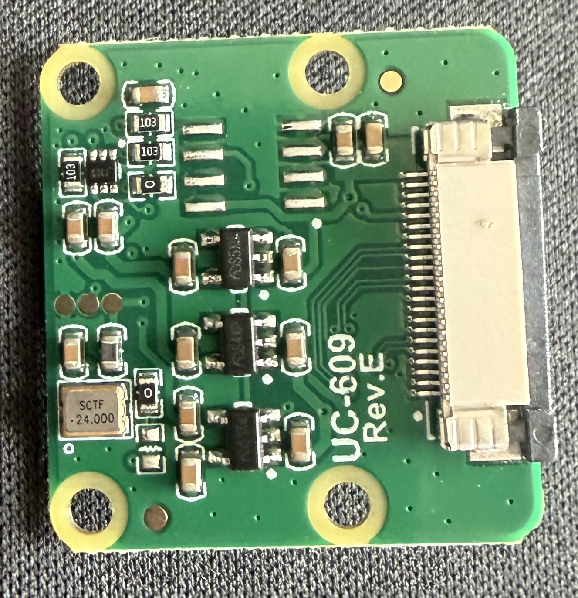
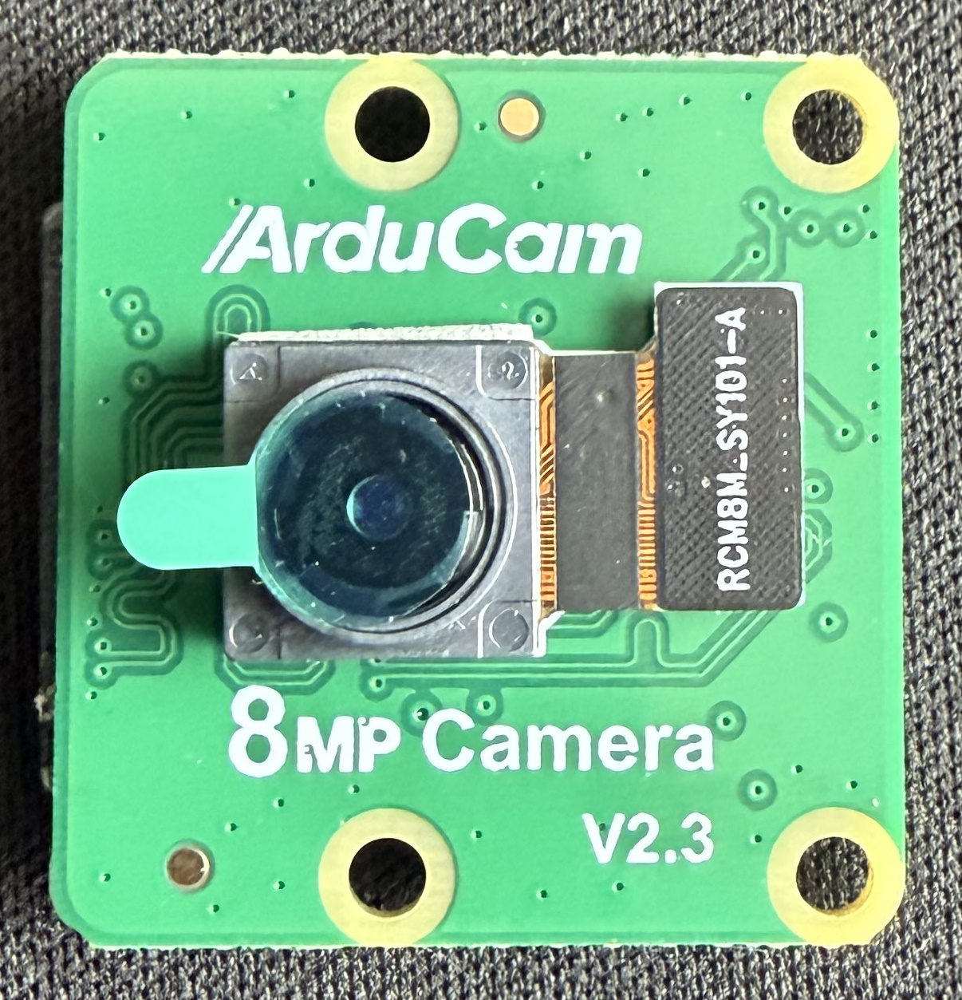

Camera-side orientation
- Flip the camera over — the CSI connector is on the back of the board (opposite the lens).
- Lift the latch — same as the Pi: gently pull the dark/white plastic tab upward.
- Slide cable in — metal contacts facing TOWARD THE BOARD (i.e., facing the back PCB surface, away from you as you look at the back).
- Another way to think about it: contacts face AWAY from the lens.
- Push latch down to lock.
- Tug test — gently pull. Should be secure.

Front of Arducam (lens side) — cable does NOT connect here. Flip to the back.
| Which side of cable faces... |
Direction |
| Metal contacts (shiny, text) |
⬇ DOWN — toward the camera PCB (away from lens) |
| Plain / blue stiffener |
⬆ UP — toward you / toward the lens side |
✅
Rule of thumb for both connectors: Metal contacts always face the board. If you can see the shiny traces while the cable is inserted, it's wrong.